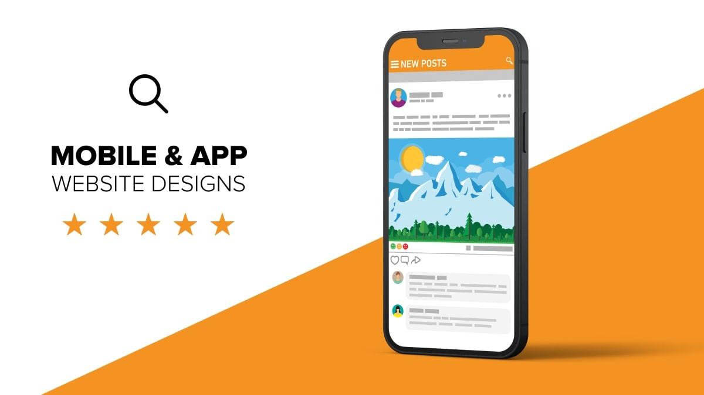

Software Development Services



T-NARG offers a comprehensive range of software development services tailored to meet your business needs. Our expertise covers:
What We Offer
- Custom Website Design and Development: Tailored websites that reflect your brand and business objectives.
- Responsive and Mobile-Friendly Designs: Websites that look great and work seamlessly on all devices.
- Integration of Modern Technologies: Dynamic and scalable web solutions using the latest frameworks.
- E-commerce Solutions: Secure online stores with integrated payment gateways for smooth transactions.
- Content Management Systems (CMS): User-friendly platforms for easy content updates and management.
- Search Engine Optimization (SEO): Improved visibility and organic traffic through optimized websites.
- Quality Assurance and Testing: Reliable websites with rigorous testing for performance and functionality.
- Continuous Support and Maintenance: Ongoing services to keep your website secure and up to date.
- Mobile App Development: Native and hybrid apps designed for iOS and Android platforms.
- UI/UX Design: Intuitive interfaces that enhance user engagement and satisfaction.
- Database Development and Management: Robust solutions for efficient data handling tailored to your needs.
- Cloud Services: Scalable and cost-effective solutions for hosting and managing applications.
- Security Consulting: Audits and solutions to protect your applications and data from cyber threats.
- Blockchain Development: Secure and transparent transactions with decentralized apps and smart contracts.
- IT Consulting: Strategic guidance to align technology with your business goals for digital transformation.
- User-Centered Design: Designing interfaces that prioritize user experience, ensuring intuitive navigation and engagement.